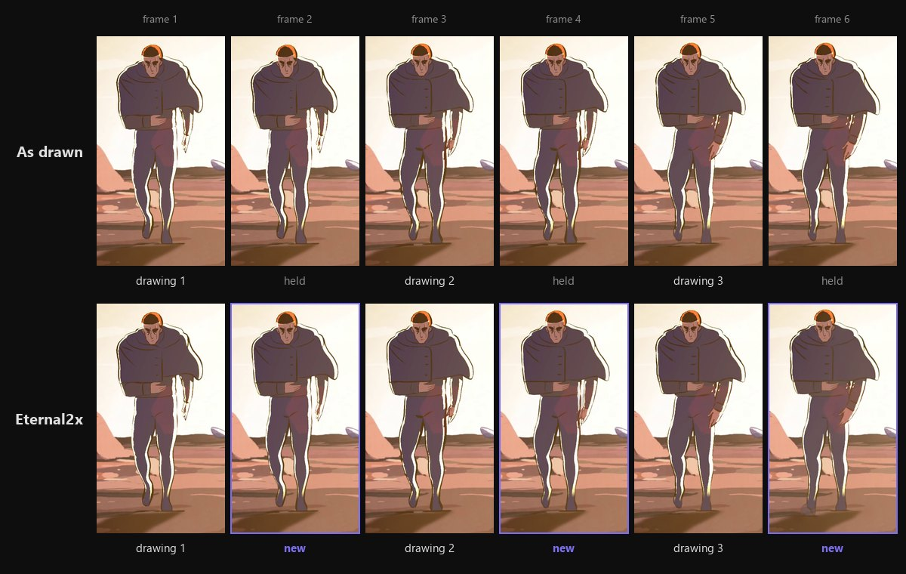

Smooth 2x for anime
with Eternal2x
Recovers the drawings in animation held on 2s and 3s, rebuilds the in-betweens and upscales 2x, right on your DaVinci Resolve timeline. No external tools. No render-export loops.
How it works
Two buttons. Analyse first, then rebuild.

Find the real drawings
Animation drawn on 2s or 3s repeats each drawing two or three times. Eternal2x compares every frame to the one before it and works out which frames are genuinely new and which are held.
Read the timing
It reports whether the shot is on 1s, 2s or 3s before touching anything, so you can see what it found. Deliberate held poses are recognised and kept still rather than smoothed into drift.
Fill in the gaps
The in-between frames that were never drawn are generated with optical flow, or at AI quality with the RIFE network, which keeps a fast-moving character in one piece. The real drawings are never resampled.
Upscale 2x
The rebuilt clip comes back with Resolve Super Scale applied and lands on the track above the original, lined up with it, at the same length and frame rate.
Why Eternal2x
Built into Resolve
Runs as a native Resolve script panel on your timeline. Rendering happens in the background, so Resolve stays usable while it works.
Simple Install
One installer command sets up the Python packages, copies the plugin into Resolve and writes its config. No manual file copying.
Auto Updates
Install once, stay current. Eternal2x checks for updates when it opens and verifies every download against a checksum before applying it.
Made for animation
Built for hand-drawn animation, not generic footage. If a clip has no duplicated frames it tells you and stops, rather than inventing motion that was never there.
Lined up with your edit
The result lands on the track above the original, starting on the same frame. Show Original flips between the two, so you judge it on your own timeline.
AI quality
The RIFE network draws fast motion cleanly where optical flow leaves a faint double image. It runs on your own machine, and its first use downloads about 40 MB.
Requirements
DaVinci Resolve Studio 18+. Since 19.1 the free edition blocks script panels like this one, so it cannot open Eternal2x.
Windows 10/11 or macOS 12+
Python 3.8+, free from python.org. The installer adds the packages it needs.